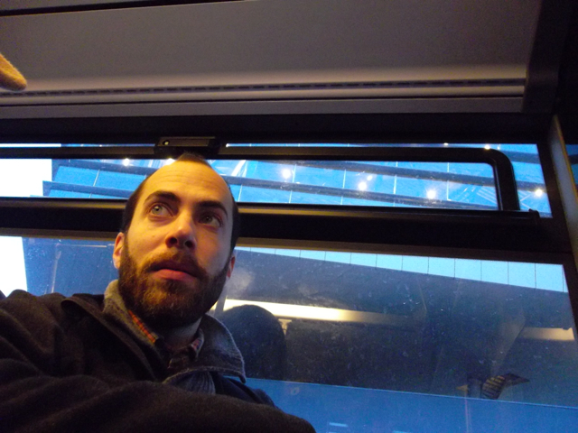

| 
See my CV for a complete list of my publications. See the SLAAP Papers page for links/handouts/pdfs for various SLAAP-related papers and talks from the early years of SLAAP.
See the Frontiers in Artificial Intelligence Research Topic on Computational Sociolinguistics, which I co-edited.
See the three volumes in the Publication of American Dialect Society series on Western Speech - edited by Valerie Fridland, Betsy Evans, Alicia Wassink, Lauren Hall-Lew, and me: Speech in the Western States, Volume 1: The Coastal States (2016), Speech in the Western States, Volume 2: The Mountain West (2017), and Speech in the Western States, Volume 3: Understudied Varieties (2020). The volumes feature a series of new studies on vowel patterns around the continental Western U.S. by a range of research groups.
See the 2019 special issue, co-edited with Charlie Farrington, of American Speech featuring studies with CORAAL.
Also, see my article commemorating Labov's ground-breaking work on Martha's Vineyard in the early 1960s: 50 years of language study began on Martha's Vineyard in the Martha's Vineyard Times newspaper, August 16, 2011.
Links//
|
selected research publications
- 2023, Sociophonetics and speech rate and pause. In Christopher Strelluf (ed.), The Routledge Handbook of Sociophonetics, 55-75. New York: Routledge.
- 2023, with Nicolai Pharao, Jane Stuart-Smith, and Charlotte Vaughn. Advancements of phonetics in the 21st century: Theoretical issues in sociophonetics. Journal of Phonetics, 98: 101226.
- 2022, with Charlie Farrington. Managing sociolinguistic data with the Corpus of Regional African American Language (CORAAL). In Andrea Berez-Kroeker, Bradley McDonnell, Eve Koller, & Lauren Collister (eds.), Open Handbook of Linguistic Data Management, 185-193. Cambridge, MA: MIT Press.
- 2022, with Morgan Sonderegger, Jane Stuart-Smith, Michael McAuliffe, and Rachel Macdonald. Managing data for integrated speech corpus analysis in SPeech Across Dialects of English (SPADE). In Andrea Berez-Kroeker, Bradley McDonnell, Eve Koller, & Lauren Collister (eds.), Open Handbook of Linguistic Data Management, 195-207. Cambridge, MA: MIT Press.
- 2022, with Valerie Fridland. Managing sociophonetic data in a study of regional variation. In Andrea Berez-Kroeker, Bradley McDonnell, Eve Koller, & Lauren Collister (eds.), Open Handbook of Linguistic Data Management, 237-247. Cambridge, MA: MIT Press.
- 2021, with Kaylynn Gunter and Charlotte Vaughn. Contextualizing /s/ retraction: Sibilant variation and change in Washington D.C. African American Language. Language Variation and Change, 33(3): 331 - 357.
- 2021, with Charlotte Vaughn, Charlie Farrington, Kaylynn Gunter, Jaidan McLean, Chloe Tacata, and Shelby Arnson. Considering Performance in the Automated and Manual Coding of Sociolinguistic Variables: Lessons From Variable (ING). Frontiers in Artificial Intelligence: Computational Sociolinguistics, Volume 4, 648543.
- 2021, with Valerie Fridland. Sociophonetics. Cambridge University Press. [ Book at: Cambridge UP, Amazon, Google Books... | Book website ]
- 2020, with Charlotte Vaughn. Exploring vowel formant estimation through simulation-based techniques. Linguistics Vanguard, 6: s1.
- 2020, with Kaylynn Gunter and Charlotte Vaughn. Perceiving Southernness: Vowel categories and acoustic cues in Southernness ratings. Journal of the Acoustical Society of America, 147: 643-656.
- 2019, with Charlotte Vaughn. Stylistically coherent variants: Cognitive representation of social meaning. Revista de Estudos da Linguagem, 27(4): 1787-1830.
- 2018, with Charlotte Vaughn. Listener sensitivity to probabilistic conditioning of sociolinguistic variables: The case of (ING). Journal of Memory and Language, 103: 58-73.
- 2018, with Charlie Farrington and Valerie Fridland. Vowel dynamics in the Southern Vowel Shift. American Speech, 93.2: 186-222.
- 2018, with Charlotte Vaughn and Kaylynn Gunter. Probing the social meaning of English adjective intensifiers as a class lab project. American Speech, 93.2: 298-311.
- 2018, with William Leroux. English article acquisition by Chinese learners of English: An analysis of two corpora. System, 76: 13-24.
- 2018, with Valerie Fridland. Regional Identity and Listener Perception. In Erica Benson, Betsy Evans, and James Stanford (eds.), Language Regard: Methods, Variation, and Change, 132-150. Cambridge, UK: Cambridge University Press.
- 2017, with Valerie Fridland. Speech in the Silver State. In Fridland, Valerie, Alicia Wassink, Tyler Kendall, and Betsy Evans (eds.), Speech in the Western States, Vol. 2: The Mountain West, 139-164. Durham, NC: Duke University Press.
- 2017, with Valerie Fridland. Regional relationships among the low vowels of U.S. English: Evidence from production and perception. Language Variation and Change, 29.2: 245-271.
- 2017, with Valerie Fridland. English in the Western U.S. In Raymond Hickey (ed.), Listening to the Past: Audio Records of Accents of English, 325-349.
- 2016, with Jason McLarty and Charlie Farrington. Investigating the Development of the Contemporary Oregonian English Vowel System. In Valerie Fridland, Tyler Kendall, Betsy Evans, and Alicia Beckford Wassink (eds.), Speech in the Western States, Volume 1: The Coastal States, 135-157. Durham, NC: Duke University Press.
- 2016, with Walt Wolfram. Engagement Through Data Management and Preservation. In Karen Corrigan and Adam Mearns (eds.), Creating and Digitizing Language Corpora, Volume 3: Databases for Public Engagement, 133-157. Basingstoke, UK: Palgrave Macmillan.
- 2016, with Valerie Fridland. Mapping the Perception of Linguistic Form: Dialectometry with Perception Data. In Marie-Helene Cote, Remco Knooihuizen, and John Nerbonne (eds.), The Future of Dialects, 173-194. Berlin: Language Science Press.
- 2015, with Charlotte Vaughn. Measurement Variability in Vowel Formant Estimation: A Simulation Experiment. Proceedings of the International Congress on Phonetics (ICPhS) 2015.
- 2015, with Valerie Fridland. Within-Region Diversity in the Southern Vowel Shift: Production and Perception. Proceedings of the International Congress on Phonetics (ICPhS) 2015.
- 2014. Archiving and Managing Sociolinguistic Data: The Problems of Portability, Access and Security, and Discoverability and Relevance. Language and Linguistics Compass, 8.11: 495-504. Special issue on archiving sociolinguistic data.
- 2014, with Jason McLarty and Charlie Farrington. Perhaps we used to, but we don't anymore: The habitual past in Oregonian English. Penn Working Papers in Linguistics, 20.2: 13.
- 2014, with Valerie Fridland and Charlie Farrington. Durational and spectral differences in American English vowels: Dialect variation within and across regions. Journal of the Acoustical Society of America, 136.1: 341-349.
- 2013. Speech Rate, Pause, and Sociolinguistic Variation: Studies in Corpus Sociophonetics. Palgrave Macmillan. [ Book at: Palgrave Macmillan, Amazon, ... ]
- 2012, with Valerie Fridland. Exploring the relationship between production and perception in the mid front vowels of U.S. English. Lingua, 122.7: 779-793.
- 2012, with Valerie Fridland. Variation in perception and production of mid front vowels in the U.S. Southern Vowel Shift. Journal of Phonetics, 40.2: 289-306.
- 2011, with Joan Bresnan and Gerard Van Herk. The dative alternation in African American English: Researching syntactic variation and change across sociolinguistic datasets. Corpus Linguistics and Linguistic Theory 7.2, 229-244. [ manuscript, PDF ]
- 2011. Corpora from a sociolinguistic perspective (Corpora sob uma perspectiva sociolinguística). In Stefan Th. Gries (Ed.), "Corpus studies: Future directions", special issue of Revista Brasileira de Linguística Aplicada 11.2, 361-389. [ HTML | PDF ]
- 2011, with Gerard Van Herk (Eds.). "Corpus linguistics and sociolinguistic inquiry", special issue of Corpus Linguistics and Linguistic Theory 7.1.
- 2010, with Valerie Fridland. Mapping production and perception in regional vowel shifts. Penn Working Papers in Linguistics 16.2. Philadelphia: University of Pennsylvania.
- 2010. Accommodating (ING): Individual variation in mixed-ethnicity interviews. In B. Heselwood and C. Upton, (eds.), Proceedings of Methods XIII: Papers from the Thirteenth International Conference on Methods in Dialectology, 2008: 351-61. Frankfurt am Main: Peter Lang. [ manuscript, PDF ]
- 2009. Speech Rate, Pause, and Linguistic Variation: An Examination Through the Sociolinguistic Archive and Analysis Project, Doctoral Dissertation. Durham, NC: Duke University. [ (sort of) summary | PDF (13.1mb) ]
- 2009, with Walt Wolfram. Local and external standards in African American English. Journal of English Linguistics, 37.4: 305-330.
- 2009, with Christine Mallinson. "The way I can speak for myself": The social and linguistic context of counseling interviews with African American adolescent girls in Washington, DC. In S. L. Lanehart (ed.), African American Women's Language: Discourse, Education, and Identity: 110-126. Newcastle upon Tyne: Cambridge Scholars Publishing.
- 2008. On the history and future of sociolinguistic data. Language and Linguistics Compass, 2.2: 332-351.
- 2007. Listening to silence: Interpretation and transcription of pause in deposition. In M. T. Turell, M. Spassova, and J. Cicres (eds.), Proceedings of the Second European IAFL Conference on Forensic Linguistics / Language and the Law: 323-332. Barcelona: IULA, Documenta Universitaria.
- 2007. Enhancing sociolinguistic data collections: The North Carolina Sociolinguistic Archive and Analysis Project. Penn Working Papers in Linguistics 13.2: 15-26. Philadelphia: University of Pennsylvania.
- 2007. "The people what makes the town": The semiotics of home and town spaces in Princeville, NC. The North Carolina Folklore Journal 54.1: 33-53.
|